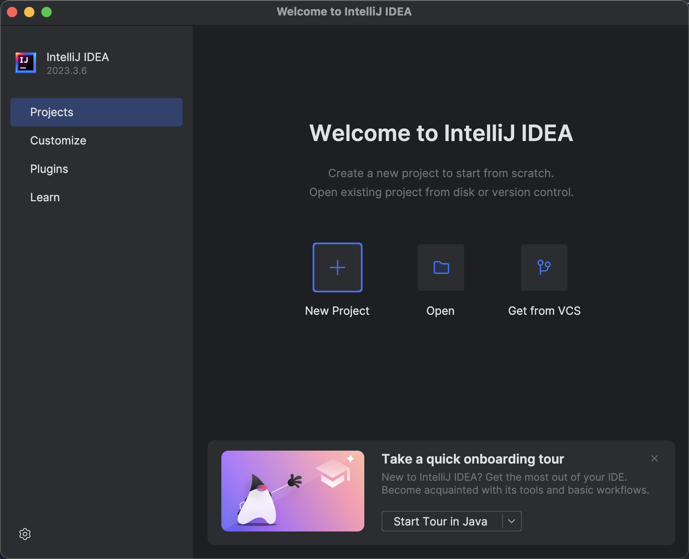

上手 Java
Java 是一门非常成熟的工业级静态类型语言。对于新手来说，它是体验和了解「静态类型系统」的绝佳语言之一。
所谓静态类型，就是对程序中各数据的类型进行严格规范的一种语言特性。比如在 Java 中，所有变量在定义的时候都需要声明标记它的数据类型。这会让代码看起来有点“啰嗦”，不够简洁。但好处是，代码可以无需运行就能通过类型不匹配提前发现问题，保证代码可靠性（静态类型检查）。此外，标记类型也让编译后的程序不用每次都询问一下数据的类型而减小了计算开销，提高程序性能。比如 Java 比非编译执行的语言 Python 就快 30 多倍。
静态类型的语言也使得 IDE（集成开发环境，比如下文介绍的 IntelliJ IDEA）能更好地支持它，比如可以实现精准的语义跳转和重构（比如可靠的变量换名）等操作。
通过 Java 还可以体验面向对象（OOP）的设计精髓：面向对象主要不在于节省代码、重用代码——这些其他非面向对象语言也能做到——而在于表达各种类型之间的关系（其实就是数学上集合的包含关系）。
它本来这种类型它不是这种集合的包含关系，他还去继承一下。就因为他能省…少打一点代码。结果后来就越弄越复杂。看不懂了。
还有就是面向对象的设计把各种函数以它的方式整理起来（使用类似 object.method 这样的方式访问），让函数更有“组织性”：
- 比如都是访问
e1的内容，对比binopE1(exp)和binop.e1这两种表达方式，后者阅读上会更加直观一点
Java 编程环境
Java 是一个需要编译才能运行的语言，不像其他一些语言那样 .py .js 等文件写好了直接就能运行。在学习和开发的时候，最好能打开一个命令行窗口（Ternimal），进行相关操作才比较方便。
安装 JDK
JDK（Java Development Kit）是用于开发 Java 应用程序的软件包，提供了运行 Java 代码所需的工具和库，比如编译器（javac）。通过 Hombrew 来安装。完成后就可以在终端命令行里使用java和javac了：## 东西比较多，注意保持网络通畅 $ brew install openjdk ## brew install java ## 安装的是由 Apple 或者 Apple 授权的 Java 版本，通常是 Oracle JDK ## brew install openjdk ## 安装的是由 OpenJDK 项目提供的开源 Java 版本，与 Oracle JDK 功能上是兼容的 ## 不同的是 OpenJDK 是由社区维护的 ## 安装完成之后，应该要能用这个命令查看 Java 的版本 $ java --version openjdk 21.0.2 2024-01-16 OpenJDK Runtime Environment Homebrew (build 21.0.2) OpenJDK 64-Bit Server VM Homebrew (build 21.0.2, mixed mode, sharing)Tips：新手推荐在下文 IntelliJ IDEA 中的 onboarding tour 教学过程中安装 JDK，省去各种复杂的配置安装 IntelliJ IDEA（推荐）
IntelliJ IDEA 是 JetBrains 公司推出的集成开发环境（IDE）。对 Java 编程来说，使用上比 VS Code 更加方便一些。对于初学者，下载安装 IntelliJ IDEA Community Edition 这个免费的版本就够用了。
图中可以看到，IntelliJ IDEA 有极其友好的 onboarding 入门教程。点击 Start Tour in Java 试试吧。
这个 Quick onbording tour 的过程中还能根据提示非常方便地安装 JDK 。也可以从
Menu Bar->Help->Lean IDE Features进入 Onbording tour 。
开始编程
先来简单地走一遍流程，了解一下整个 Java 编程作业的大体过程。
新建
.java文件：## 打开 Terminal，进入到要进行编程的目录 $ cd ~/Documents/prog ## 创建新的工作目录 $ mkdir lesson9 $ cd lesson9/ ## 在这个目录下新建一个 .java 文件 ## 注意这里文件名首字母要大写，因为后续文件里要写一个类 class Lesson9 $ touch Lesson9.java对代码的分散管理是 Java 的特点。这也导致了 Java 编程的过程中会产生很多文件。所以通常会建立一个工作目录来进行作业。这里
.java文件的名字是有命名规则要求的，这是 Java 语言的一个规范：- 若文件中有公共类
public class，则文件名必须和该类的名字一样，一个文件只能有一个公共类； - 若无公共类，则文件名无要求，但最好用易理解可维护的名字，如此处用代表性类的名字
Lesson9；
- 若文件中有公共类
编辑上述文件写入
Java代码：// Lesson9.java class Lesson9 { public static void main(String[] args) { System.out.println("Elegant!"); } }Lesson9.java 文件里定义了一个类
Lesson9。类里定义了一个函数main。该函数接收一个参数args。其中String[]标记了参数args的类型。它是一个存储字符串对象的数组类型。void代表这个函数没有返回值，也可以认为该函数的返回类型是 void 。main 函数里是个打印语句，打印出字符串"Elegant!"。public表示 main 函数在 Lesson9 这个类的外面也可以被访问和调用。与之相对的是private，表示只能在类内部才能访问调用这个函数。如果两者都没有，那这个函数就有另外的作用范围。static表示 main 是一个普通的函数（function），而不是类中的方法（method），它的调用方式是main(args)。如果没有static标记，它的调用方式就是(New Lesson9()).main(args)了。
Java 默认所有的函数都是方法（method）。方法存在一个内部可用的参数是this，用static标记的普通函数则没有this这个参数。public和static的位置可以互换。编译和运行：
.java文件里的代码写好之后，需要先用javac命令将其编译成.class文件（字节码 bytecode）。然后再用java命令来运行编译好的.class文件。使用java命令运行的时候，只需写文件名就行，不用写 .class 这个后缀。
比如下面的例子里，java Lesson9就能运行。## 切换回 Terminal $ pwd ~/Documents/prog/lesson9 ## 可以看到，当前目录下只有一个上面编辑好的文件 $ ls Lesson9.java ## 编译 .java 文件 - javac 这个命令代表 java compiler $ javac Lesson9.java ## 可以看到，当前目录下多了个 .class 文件 $ ls Lesson9.class Lesson9.java ## 运行 .class 文件，打印出字符串 "Elegant!" $ java Lesson9 Elegant!为什么要把编译和运行分开，而不是像解释器那样直接运行代码？
因为直接运行会有很多重复的操作（主要是反复询问程序的结构和类型，比如问这是一个 if 吗？是的话就要计算 condition 表达式的值。编译之后就不用问，而是到这步直接计算 condition 的值）。如果先编译再运行，它会去掉很多重复的操作。这样代码就会快很多。这就是为啥一般这种工业化的语言它都会稍微编译一下。
更顺手的 IntelliJ
当需要频繁使用 Java 写些严肃点的东西时，上面的方式就不那么好用了。使用 IntelliJ IDEA 编程会更加高效。跟着 IntelliJ 的 onboarding 入门教程走一遍就能很快上手，这里主要记录一下常用快捷键和技巧：
快捷键：
- 编译并运行代码：
control + R（ MacOS 系统）； - 快速排版（格式化）所有代码：
cmd + option + L（ MacOS 系统）； - 注释/取消注释代码（选中后按）：
cmd + /（ MacOS 系统）； - 显示光标位置代码可能的改善操作（常用于处理 warning）：
option + Return（ MacOS 系统）； - 搜索（若有选中的内容，则它会自动进入搜索框）：连续按 2 次
Shift键；
技巧：
- 设置缩进空格数：
Preferences->Editor->Code Style->Java->Tabs and Indents-> 设置Indents空格数； - 设置 if-else 另起一行：
Preferences->Editor->Code Style->Java->Wrapping and Braces->'if()' statement-> 勾选'else' on new line； - 关闭类型、变量名等提示：
Preferences->Editor->Inlay Hints-> 取消勾选Code vision、Parameter names和Types； - Run with Coverage 功能可以检查测试代码的覆盖率
Java 语言基本知识
Java 的文件里要有一个 main 函数
语法上，若你的 if 里只有一行，可以不打花括号，但这不是一个好的做法。好一点的编程规则都要求打上花括号，哪怕只有一行。
Java 的类要用关键词
new，这是一个好设计。比如new Dog()如果写成Dog()，就和普通函数混淆了。加一个new就能知道不是普通函数，而是一个类，或者某种构造函数。如果你的值，它的实际的类型是这个变量标记类型的子类型，你就可以用这个父类的变量指向一个子类的对象：
Animal dog = new Dog();为了通用，变量的类型一般都尽可能标记成上层的父类型（写高一点），这样后期更改实现就简单很多
在 Java 中，类的名称通常遵循一种命名约定，即类名的首字母应该大写。这是一种广泛接受的编程规范，被称为“大驼峰命名法”（PascalCase）。按照这个规范，类名的每个单词的首字母都要大写，而单词之间不使用下划线或其他分隔符。
虽然在 Java 中，类名的首字母一般应该大写，但从语法上讲，类名的首字母也可以小写。但是，强烈建议遵循命名约定，使用大写字母开头的类名，以便与变量名（小驼峰命名法）等其他命名约定区分开来，并且符合 Java 社区的编程习惯和规范。这样可以增加代码的可读性和可维护性，使代码更符合行业标准。
Java 里面，所有不是整数之类那种特别小的类型的，凡是你用
new创建的那些对象——虽然你没有写那个指针的符号——它全都是指针。Java 里面几乎全都是 Pass by Reference ，除了int之类的它拷贝了一下。
Java 基本数据类型
整数 - int
// TO DO浮点数 - float
整数和浮点数在电脑里是有差别的，整数和浮点数混合计算会被转化为浮点数，结果也是浮点数// TO DO字符串 - string
可以用单引号'hello'，也可以用双引号"hello"
一个常用的字符串方法：str.split()// TO DO布尔类型 - bool
// TO DO
基本的数据结构
列表 - List
// TO DO
变量定义
// TO DO函数
// TO DO条件分支 - if 语句
static int fib(int n)
{
if (n == 0)
{
return 0;
}
else if (n == 1)
{
return 1;
}
else
{
return fib(n - 1) + fib(n - 2);
}
}异常 - Exception
// // 运行时的 Exception（RuntimeException）表示类型系统不会检查它
public T get(int index) // 这行没写 throw IndexOutOfBoundsException ，因为这是运行时的 Exception
{
if (index >= size)
{
throw new IndexOutOfBoundsException("Input index: " + index + " is out of bound. ");
}
else
{
return this.data[index];
}
}RuntimeException 就是你无能为力的一些事情，所以不需要去 try-catch 它。
打赏